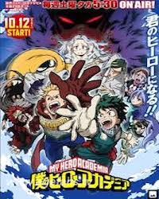

我的英雄学院 第二季
因偶然事件为契机与世界第一的英雄欧尔麦特相遇的“无个性”少年绿谷出久，身体内继承了欧尔麦特的个性，具有了成为英雄的资质。在经过严厉的训练后，绿谷出久成功进入了雄英高中入学，在与爆豪胜己、丽日御茶子等英雄科1年A班的同学们一起在互相切磋和学习中度过每一天。在这种情况下，全国瞩目的活动“雄英高中体育祭”来临了。目指第一的爆豪胜己，因为家族原因具有强烈意志的饭田天哉，为了否定父亲而渴求胜利的轰焦冻，以及英雄科1年B班的成员...。雄英高中所有同学都气志高涨，绿谷出久也重新下定了决心。“我也会全力去比赛的！“
以最顶级的英雄为目标的学生们，“个性”、力量和自尊的战斗拉开了序幕！！